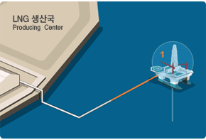
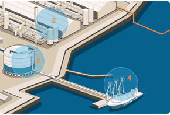
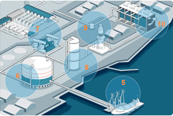
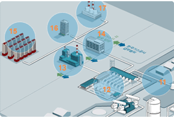
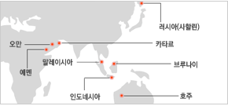

천연가스 공급
천연가스 공급 사업체계
-
단계1_해외 원산지 공정
천연가스는 해외 원산지에서 액화천연가스(LNG)상태로 KOGAS에 의해 도입됩니다. KOGAS는 이 LNG를 다시 기화하여 발전소 등지에 직접 공급하거나 일반도시가스회사에 공급하게 됩니다.
- 1 채취 및 정체
- 2 생산국 액화설비
- 3 생산국 저장탱크
- 4 선적설비
-
단계2_KOGAS 고정(도매업)
천연가스는 해외 원산지에서 액화천연가스(LNG)상태로 KOGAS에 의해 도입됩니다. KOGAS는 이 LNG를 다시 기화하여 발전소 등지에 직접 공급하거나 일반도시가스회사에 공급하게 됩니다.
- 5 하역설비
- 6 저장탱크
- 7 증발가스 압축기
- 8 액화설비
- 9 2차펌프
- 10 기화기
-
단계3_도시가스사(소매업)
천연가스는 해외 원산지에서 액화천연가스(LNG)상태로 KOGAS에 의해 도입됩니다. KOGAS는 이 LNG를 다시 기화하여 발전소 등지에 직접 공급하거나 일반도시가스회사에 공급하게 됩니다.
- 11 KOGAS배관망
- 12 공급관리소
- 13 발전소
- 14 도시가스사
- 15 2차펌프
- 16 일반사무실
- 17 일반공장
천연가스 도입수송 현황
-
도입현황
1986년 10월 국내 최초로 인도네시아로부터 LNG를 도입한 이래 도입량은 해마다 급증하여 2012년 34,970천톤을 도입하였습니다. 전국 환상공급망 구축에 따른 수요 증가에 대비하여 물량의 적기 확보로 공급의 안정성을 도모하고자 인도네시아, 말레이시아 외에 브루나이, 카타르, 오만 등으로 도입선을 다변화하였습니다. 또한 20년 이상의 장기계약에 의해 도입되는 LNG의 특성상, 과학적인 통계분석모형을 이용하여 정확한 수요예측을 하고 있습니다. 세계 최대 물량을 도입하는 KOGAS의 국제적인 위상을 바탕으로 경직된 도입조건을 개선하기 위한 활동도 지속적으로 펴고 있습니다.
(단위:천톤)도입국가 물량 카타르 10,587
말레이시아 4,036
오만 4,164
인도네시아 6,206
러시아 2,050
예멘 2,604
호주 777
브루나이 837
기타 3,709
총합계 34,970 주1) 기타 도입국: 트리니다드 토바고, 나이지리아, 적도기니, 벨기에, 이집트, 스페인
-
수송현황
LNG를 운반하는 수송선은 영하 162도로 압축되어 있는 LNG를 다량 운반해야 하므로 그 제작과정이 매우 까다롭고, 고도의 해운기술을 요합니다. KOGAS는 국내 조선산업 및 해운산업 육성을 위하여 LNG 국적선 사업정책을 추진, 1994년부터 LNG 수송에 국적선을 투입하고 있습니다. 이러한 국적선 사업을 통해 추가 운항이 자유롭게 되었을 뿐만 아니 라 국내 조선업을 부흥시키는 계기를 마련하였고 최근 국내 해운업계는 LNG 국적선 건조기술 및 국적선 운항 경험을 바탕으로 세계 LNG수송선 시장에 진출, 유럽 등지의 프로젝트에 입찰, 수주하는 등 세계 LNG 수송선업계에 다크호스로 떠오르고 있습니다. 현재까지 KOGAS는 국적선 21척을 발주하였으며, 5개 해운사에 건조한 LNG국적선이 인도네시아,말레이시아, 카타르, 오만, 예멘, 러시아(사할린) 6개국에서 국내로 LNG를 수송해오고 있습니다.